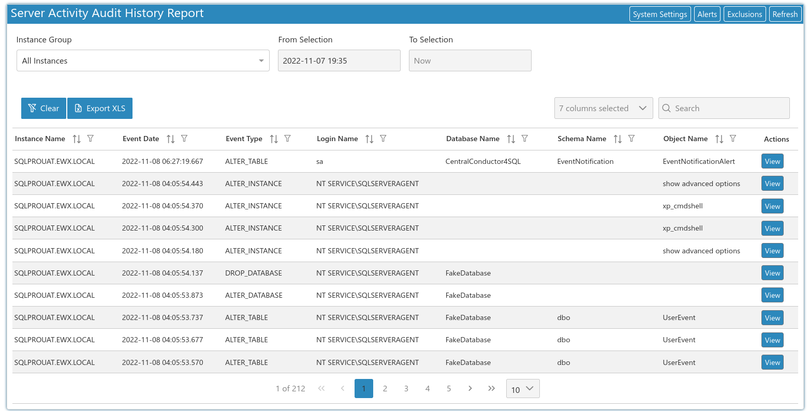
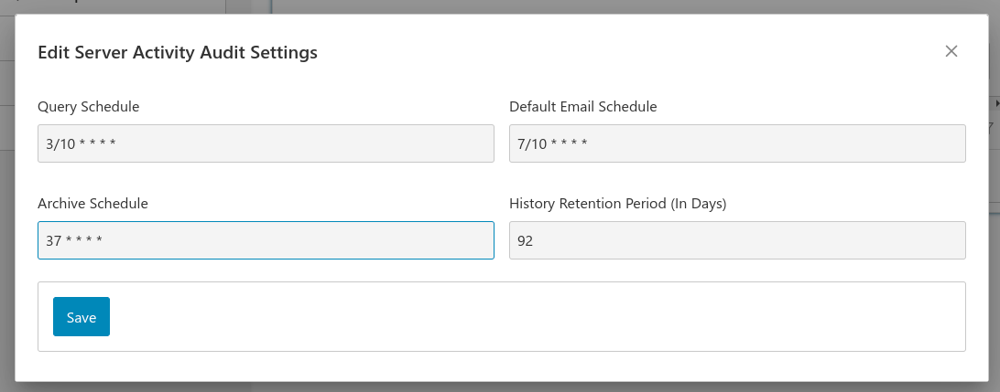

Introduction
To get started select the reports icon and choose audit history report:

Here you can see database structural changes made on your whole environment. This allows you to see if logins, databases, tables, views, indexes etc. are being added, modified or removed from your servers. You can also set up email alerts for potentially dangerous operations such as login creation or dropping databases.
Note
Server activity audit is an option that can be set by editing the instance you would like to audit. This feature is only available for Microsoft SQL Server and not SQL Azure or another of the other database types.
And by viewing a script you can see what statements users have run in SQL.

Note
If the script returns --Encrypted-- then the changes were done by an encrypted stored procedure and you cannot view the SQL that was changed.
Alerts
Clicking on the Alerts button will bring you to the Server Activity Alerts screen. Here you can set up alert emails for specific events such as a table being created or a database being dropped for example
By clicking the Add Alert, you can create a new alert.
- Alert Name - A free text name of the alert which affects the email subject line, so you can tell from which alert the event fired from.
- Email List - The list of To And CC addresses to send the email to
- Is Active - Turn on or off the Alert
- Include Statement in Email - by default we don't include the actual SQL text that was run, turn this on if you would like to see the text.
- Event Type - The list of events that trigger the Alert. e.g. if I select DROP_DATABASE, I will get alerted when a user drops a database.
- Event Start Date - this is set to the date that the alert was created, if you want to test what emails will be sent you can set this date to a date in the past.
- Group Name - here you can limit the alert to a selection of instances that are part of a group
- Login/Database/Schema/Object Name Like - Here you can limit the alerts to only work with a number of objects with matching like clause. e.g. if I put in Adventure% for the Database Name Like field it would only capture events on the matching AdventureWorks and Adventure databases
- Login/Database/Schema/Object Name Not Like - In the same way as the Like operators, here you can exclude a specific item from the list. e.g. if I have a login called POSUser which is allowed to do anything in the system and I don't want alerts on anything this user does, I would add POSUser to the Login Name Not Like field.
Exclusions
Clicking on the Exclusions button will bring you to the Server Activity Exclusions screen. Here you can set up specific events that get excluded altogether in the Service Activity Audit History. A good example where this is useful would be if a destructive load process drops and recreates reporting tables every day. This allows you filter out "noise" so you can focus on the important events.
By default, we exclude some of the objects that are dropped and recreated in SQLPro's Backup and Maintenance Module.
To add a new exclusion, click on the Add Exclusion button.
- Name - the friendly name for the exclusion
- Event Type Like - the event that you would like to exclude, note that it takes wildcards so the %_DATABASE will match the CREATE_DATABASE, ALTER_DATABASE and DROP_DATABASE events.
- Login/Database/Schema/Object Name Like - here we can finely tune which objects to exclude
- Is Active - toggle the exclusion on or off
In the example, I am excluding the dropping, creating or altering of the database "Staging"
Click on the Save button to save the exclusion.
System Settings
Here you can edit schedules and retention periods for the Server Activity Audit report

- Query Schedule - The frequency to connect to all the server instances to get Audit changes
- Email Schedule - All alerts currently share a single email schedule that can be adjusted here
- Archive Schedule - How often to remove audit data that has exceeded the History Retention Period (in Days)
- History Retention Period (In Days) - the number of days to keep the audit data